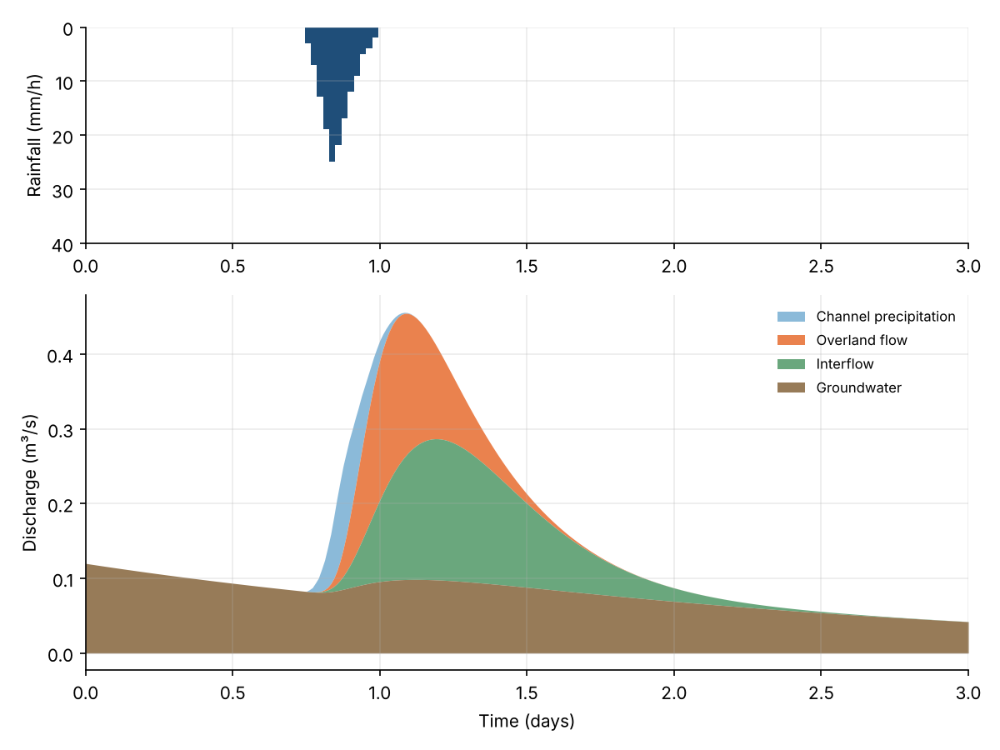
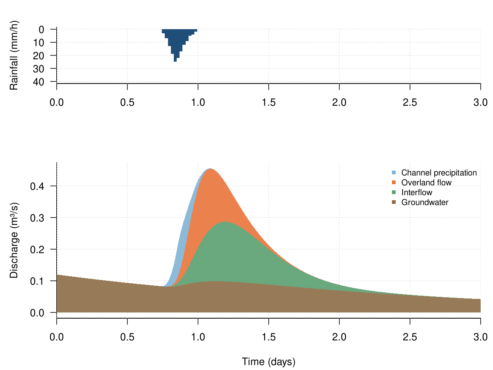
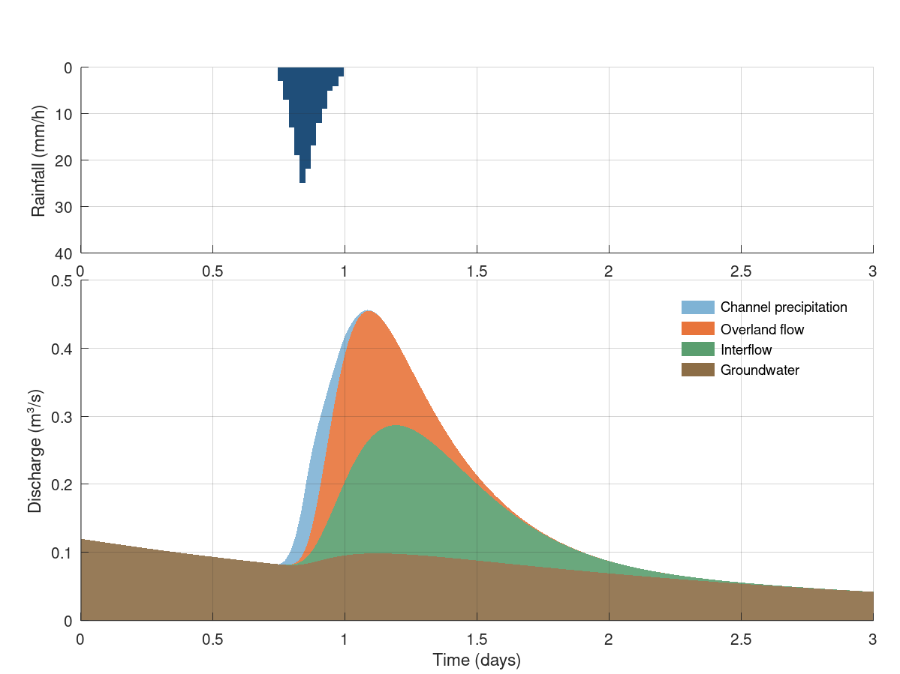

Chapter 4 · Streamflow, Runoff Generation, and Overland Flow
Hydrograph by runoff pathway (stacked)
Streamflow partitioned into channel precipitation, overland flow, interflow and groundwater.
Source: Chapter 4 draft; data supplied by the chapter author (figs/fig3_timeseries.csv)
Data: fig3_timeseries.csv

Code: runoff_pathways.py · image: figure_python.png

"""Hydrograph by runoff pathway (stacked)
Chapter 4 draft; data supplied by the chapter author (figs/fig3_timeseries.csv)
Run: python3 runoff_pathways.py -> figure_python.png"""
import numpy as np
import pandas as pd
import matplotlib
matplotlib.use("Agg")
import matplotlib.pyplot as plt
a = pd.read_csv("fig3_timeseries.csv")
a["c1"] = a["groundwater_m3_per_s"]
a["c2"] = a["groundwater_m3_per_s"] + a["interflow_m3_per_s"]
a["c3"] = a["groundwater_m3_per_s"] + a["interflow_m3_per_s"] + a["overland_flow_m3_per_s"]
a["c4"] = a["groundwater_m3_per_s"] + a["interflow_m3_per_s"] + a["overland_flow_m3_per_s"] + a["channel_precip_m3_per_s"]
fig, axes = plt.subplots(2, 1, figsize=(8, 6), squeeze=False, gridspec_kw={"height_ratios": [1.5, 2.6]})
axes = axes[:, 0]
ax = axes[0]
ax.bar(a["time_d"], a["rainfall_mm_per_h"], width=0.010416666666666666, color="#1f4e79", edgecolor="none")
ax.set_xlim(0, 3)
ax.set_ylim(40, 0)
ax.set_ylabel("Rainfall (mm/h)")
ax.grid(alpha=0.25)
for s in ("top", "right"): ax.spines[s].set_visible(False)
ax.xaxis.set_ticks_position("top") if False else None
ax = axes[1]
ax.fill_between(a["time_d"], a["c3"], a["c4"], color="#7fb3d5", alpha=0.9, lw=0, label="Channel precipitation")
ax.fill_between(a["time_d"], a["c2"], a["c3"], color="#e8743b", alpha=0.9, lw=0, label="Overland flow")
ax.fill_between(a["time_d"], a["c1"], a["c2"], color="#5a9e6f", alpha=0.9, lw=0, label="Interflow")
ax.fill_between(a["time_d"], 0, a["c1"], color="#8c6d46", alpha=0.9, lw=0, label="Groundwater")
ax.set_xlim(0, 3)
ax.set_xlabel("Time (days)")
ax.set_ylabel("Discharge (m³/s)")
ax.legend(frameon=False, loc="upper right", fontsize=8)
ax.grid(alpha=0.25)
for s in ("top", "right"): ax.spines[s].set_visible(False)
fig.tight_layout()
fig.savefig("figure_python.png", dpi=150)

Code: runoff_pathways.R · image: figure_r.png

# Hydrograph by runoff pathway (stacked)
# Chapter 4 draft; data supplied by the chapter author (figs/fig3_timeseries.csv)
# Run: Rscript runoff_pathways.R -> figure_r.png (base R, no packages needed)
a <- read.csv("fig3_timeseries.csv", stringsAsFactors = FALSE)
a$c1 <- a$groundwater_m3_per_s
a$c2 <- a$groundwater_m3_per_s + a$interflow_m3_per_s
a$c3 <- a$groundwater_m3_per_s + a$interflow_m3_per_s + a$overland_flow_m3_per_s
a$c4 <- a$groundwater_m3_per_s + a$interflow_m3_per_s + a$overland_flow_m3_per_s + a$channel_precip_m3_per_s
png("figure_r.png", width = 1200, height = 900, res = 150)
par(mfrow = c(2, 1), mar = c(4.2, 4.6, 2.2, 1), las = 1)
layout(matrix(1:2, ncol = 1), heights = c(1.5,2.6))
par(mar = c(4.2, 4.6, 2.2, 1), las = 1)
plot(NA, xlim = c(0, 3), ylim = c(40, 0), log = "", xlab = "", ylab = "Rainfall (mm/h)", bty = "l", xaxs = "i")
grid(col = "grey88")
rect(a$time_d - 0.010416666666666666/2, 0, a$time_d + 0.010416666666666666/2, a$rainfall_mm_per_h, col = "#1f4e79", border = NA)
plot(NA, xlim = c(0, 3), ylim = range(c(a$c4, a$c3, a$c3, a$c2, a$c2, a$c1, a$c1, 0), na.rm = TRUE), log = "", xlab = "Time (days)", ylab = "Discharge (m³/s)", bty = "l", xaxs = "i")
grid(col = "grey88")
polygon(c(a$time_d, rev(a$time_d)), c(a$c4, rev(a$c3)), col = adjustcolor("#7fb3d5", alpha.f = 0.9), border = NA)
polygon(c(a$time_d, rev(a$time_d)), c(a$c3, rev(a$c2)), col = adjustcolor("#e8743b", alpha.f = 0.9), border = NA)
polygon(c(a$time_d, rev(a$time_d)), c(a$c2, rev(a$c1)), col = adjustcolor("#5a9e6f", alpha.f = 0.9), border = NA)
polygon(c(a$time_d, rev(a$time_d)), c(a$c1, rev(rep(0, length(a$time_d)))), col = adjustcolor("#8c6d46", alpha.f = 0.9), border = NA)
legend("topright", legend = c("Channel precipitation", "Overland flow", "Interflow", "Groundwater"), col = c("#7fb3d5", "#e8743b", "#5a9e6f", "#8c6d46"), lty = c(0, 0, 0, 0), pch = c(15, 15, 15, 15), bty = "n", cex = 0.8)
invisible(dev.off())

Code: runoff_pathways.m · image: figure_matlab.png

% Hydrograph by runoff pathway (stacked)
% Chapter 4 draft; data supplied by the chapter author (figs/fig3_timeseries.csv)
% Run: run runoff_pathways.m -> figure_matlab.png (works in MATLAB and GNU Octave)
clear; close all;
fid = fopen('fig3_timeseries.csv'); fgetl(fid);
C = textscan(fid, '%f%f%f%f%f%f%f%f', 'Delimiter', ',', 'EmptyValue', NaN); fclose(fid);
a.time_h = C{1};
a.time_d = C{2};
a.rainfall_mm_per_h = C{3};
a.streamflow_m3_per_s = C{4};
a.channel_precip_m3_per_s = C{5};
a.overland_flow_m3_per_s = C{6};
a.interflow_m3_per_s = C{7};
a.groundwater_m3_per_s = C{8};
a.c1 = a.groundwater_m3_per_s;
a.c2 = a.groundwater_m3_per_s + a.interflow_m3_per_s;
a.c3 = a.groundwater_m3_per_s + a.interflow_m3_per_s + a.overland_flow_m3_per_s;
a.c4 = a.groundwater_m3_per_s + a.interflow_m3_per_s + a.overland_flow_m3_per_s + a.channel_precip_m3_per_s;
figure('Visible', 'off', 'Position', [100 100 800 600], 'Color', 'w');
axes('Position', [0.09 0.625 0.88 0.275]); hold on;
xb = a.time_d(:); yb = a.rainfall_mm_per_h(:); h0 = patch('XData', [xb-0.010416666666666666/2 xb+0.010416666666666666/2 xb+0.010416666666666666/2 xb-0.010416666666666666/2]', 'YData', [zeros(size(yb)) zeros(size(yb)) yb yb]', 'FaceColor', [0.122, 0.306, 0.475], 'EdgeColor', 'none');
xlim([0, 3]);
ylim([0 40]);
set(gca, 'YDir', 'reverse');
ylabel('Rainfall (mm/h)');
box off; grid on; set(gca, 'GridAlpha', 0.2, 'Layer', 'top');
axes('Position', [0.09 0.080 0.88 0.505]); hold on;
xx = a.time_d(:)'; hi_ = a.c4(:)'; lo_ = a.c3(:)'; ok = ~isnan(hi_); h0 = patch('XData', [xx(ok) fliplr(xx(ok))]', 'YData', [hi_(ok) fliplr(lo_(ok))]', 'FaceColor', [0.498, 0.702, 0.835], 'EdgeColor', 'none', 'FaceAlpha', 0.9);
xx = a.time_d(:)'; hi_ = a.c3(:)'; lo_ = a.c2(:)'; ok = ~isnan(hi_); h1 = patch('XData', [xx(ok) fliplr(xx(ok))]', 'YData', [hi_(ok) fliplr(lo_(ok))]', 'FaceColor', [0.91, 0.455, 0.231], 'EdgeColor', 'none', 'FaceAlpha', 0.9);
xx = a.time_d(:)'; hi_ = a.c2(:)'; lo_ = a.c1(:)'; ok = ~isnan(hi_); h2 = patch('XData', [xx(ok) fliplr(xx(ok))]', 'YData', [hi_(ok) fliplr(lo_(ok))]', 'FaceColor', [0.353, 0.62, 0.435], 'EdgeColor', 'none', 'FaceAlpha', 0.9);
xx = a.time_d(:)'; hi_ = a.c1(:)'; lo_ = zeros(size(a.time_d))(:)'; ok = ~isnan(hi_); h3 = patch('XData', [xx(ok) fliplr(xx(ok))]', 'YData', [hi_(ok) fliplr(lo_(ok))]', 'FaceColor', [0.549, 0.427, 0.275], 'EdgeColor', 'none', 'FaceAlpha', 0.9);
xlim([0, 3]);
xlabel('Time (days)');
ylabel('Discharge (m³/s)');
box off; grid on; set(gca, 'GridAlpha', 0.2, 'Layer', 'top');
legend([h0, h1, h2, h3], {'Channel precipitation', 'Overland flow', 'Interflow', 'Groundwater'}, 'Location', 'northeast'); legend boxoff;
print('-dpng', '-r150', 'figure_matlab.png');